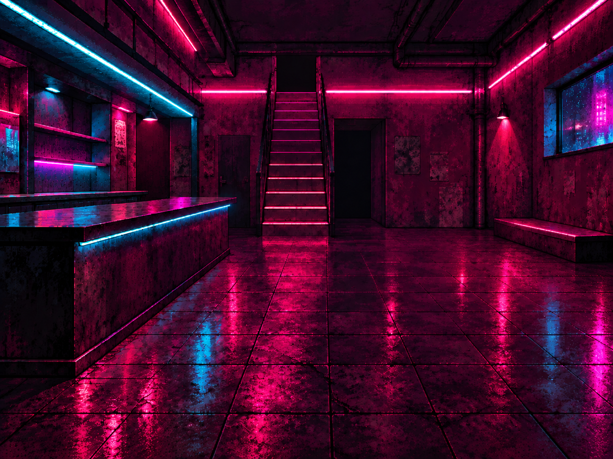
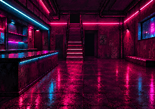
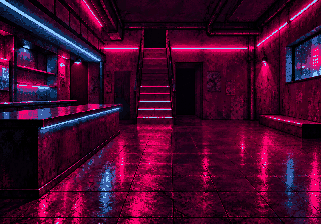
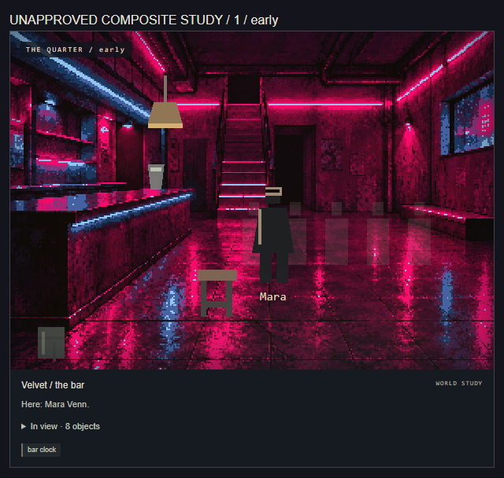

01 / 48 colours / external edit
{kind=link}

{kind=link}

{kind=link}


Control / generation settings
{
"backend": "external-reviewed-edit",
"model": null,
"seed": null,
"pixelWidth": 320,
"displayWidth": 640,
"inferenceSeconds": null
}Canonical facts
- One staircase beside the salon; main floor toward a small stage
- High street-facing window
- Fixed bar counter, bare surface
- Fixed bottle shelving, no loose cups or readable labels
Routes: vestibule, street, landing, kitchen, stage, salon, archive
Review criteria and provenance
{
"sourceType": "external-reviewed-edit",
"architectureReviewState": "pending-human-review",
"framing": {
"method": "explicit-crop",
"crop": [
4,
0,
1444,
1008
],
"orientedSourceDimensions": [
1448,
1086
],
"framedDimensions": [
1440,
1008
],
"notes": "Visual review: trim 4 px from each side and 78 px of foreground floor from bottom. Keep top edge unchanged. All stairs, counter base, right window and platform retained; no stretch, extension or camera change. Crop 1440x1008, then nearest-neighbour 320x224.",
"orientation": "EXIF transpose before coordinates; original bytes retained"
},
"generationSettings": {
"operation": "pixel-processing-only",
"width": 1440,
"height": 1008,
"pixelWidth": 320,
"displayWidth": 640,
"colors": 48,
"contrast": 1.15,
"resampling": "nearest-neighbour",
"quantization": "Pillow MEDIANCUT",
"pillowVersion": "12.3.0"
},
"environment": null,
"requiredFacts": [
"One stable room identity across all time bands; preserve established exit relationships.",
"Leave named characters, stateful doors and movable objects to runtime layers.",
"Keep overlay placement zones usable at desktop and mobile sizes.",
"One staircase beside the salon; main floor toward a small stage",
"High street-facing window",
"Fixed bar counter, bare surface",
"Fixed bottle shelving, no loose cups or readable labels",
"One canonical image across the night; no time-specific architecture variants.",
"Human must check all exits, staircase count, fixed placement and overlay composition."
],
"forbiddenFacts": [
"Extra staircases, balconies, fireplaces or gameplay-significant exits absent from the world reference.",
"Named NPCs, evidence, player belongings, readable story text, temporary damage or changing plot props baked into architecture.",
"Invented booth seating or altered window placement not supported by this room's reference.",
"Explicit sexual activity, nudity, minors, branded logos or hidden mystery facts."
],
"conditioning": {
"mode": "external-edit",
"reference": null,
"mask": null,
"layout": null
},
"structurePreservation": null,
"provenance": {
"origin": "external-reviewed-edit",
"editor": "Codex directing built-in image_gen",
"service": "Built-in image_gen image editing; exact underlying model/version not exposed",
"notes": "One targeted cleanup invocation removed bottles/drinking vessels and counter taps. Other architecture deliberately preserved for review. Result is not human approved. Surface detail also softened slightly outside requested regions; no hard-mask preservation claim.",
"modelVersion": null,
"sourceCreatedAt": null,
"parentSource": {
"file": "provenance/parent-source.png",
"sha256": "58dd60c77b8ff01dc38a723f2a2ef33a49073128b258d62de07e01d2be1d88b2",
"bytes": 2544767
},
"editPrompt": "Use case: precise-object-edit. Asset type: unapproved canonical-room plate for FREAK//CITY. Image 1 is the edit target, not a style reference. Make one tightly bounded contents-cleanup pass: remove every loose bottle and drinking vessel from the shelving at the far left and behind the bar, and remove the small bar taps/faucets on the counter near the left-middle. Leave the shelving itself fixed in exactly the same place; shelves should be visibly empty and the counter surface bare. Fill only the removed contents with matching existing shelf/back-wall/counter surface texture and existing reflected magenta/cyan illumination. Preserve EVERYTHING ELSE: exact camera, perspective, framing, room envelope, single central staircase and every tread and rail, central rear openings, all wall panels, high right window, small right platform, left counter silhouette and footprint, floor tile grid, ceiling pipes, neon strips, lamps, texture density, deep shadows, saturated magenta/cyan palette, wet reflections, no stools or people. Do not repair other architecture, add features, relight the room, redesign materials, change aspect ratio, or crop. Retain original 4:3 composition, ideally original 1448x1086 dimensions. The goal is the same successful image with only loose shelf contents and taps removed.\n",
"modelExecutedDuringImport": false
}
}{kind=link}